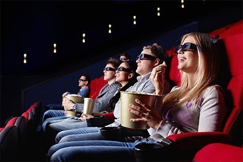

Films en spelletjes zijn eigenlijk zowat hetzelfde. Als je een spelletje speelt voel je dat je precies in een andere wereld zit. Dat is ook ongeveer zo bij een film want voor eventjes ben je echt mee in die film en wanneer het eindigt is het zo spijtig. Om eventjes te vergeten over je zorgen is het voor mij leuk om naar een actie, avontuur, comedy en fantasy films te zien. Maar dat is niet altijd plezant want anxiety kan soms eens alles verpesten.
